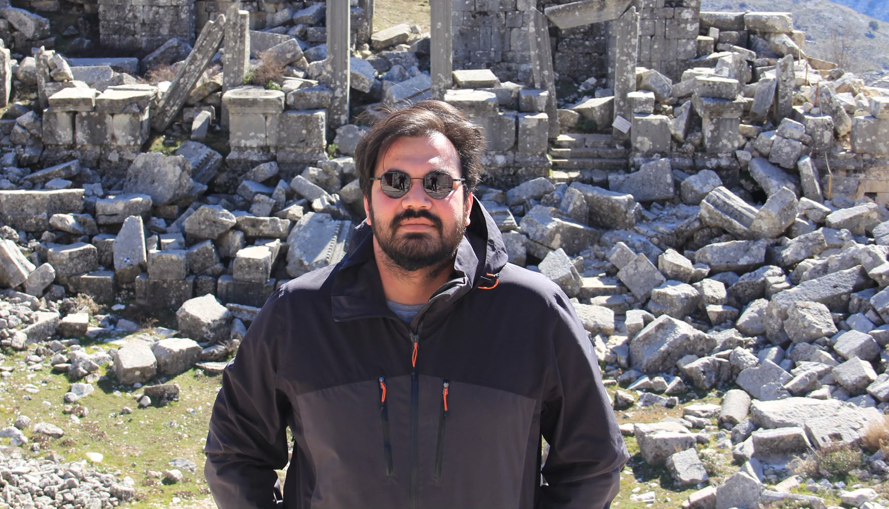
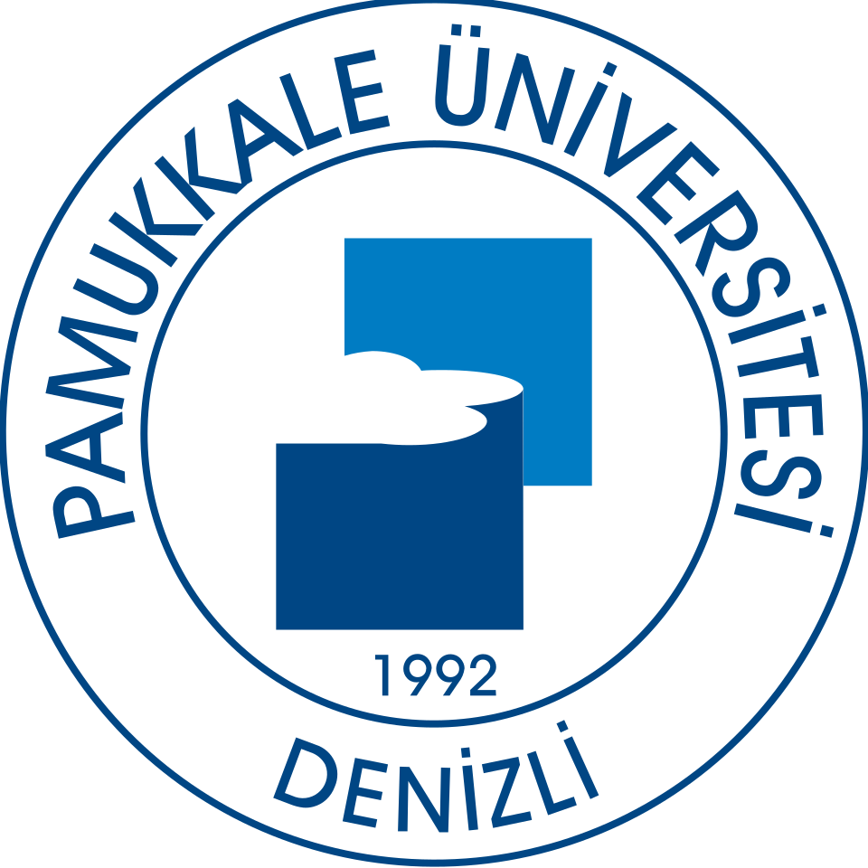
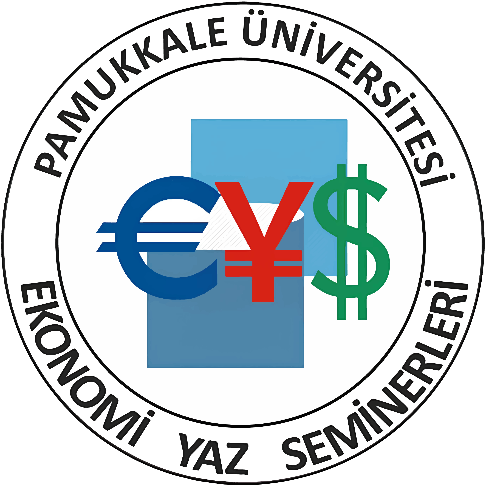
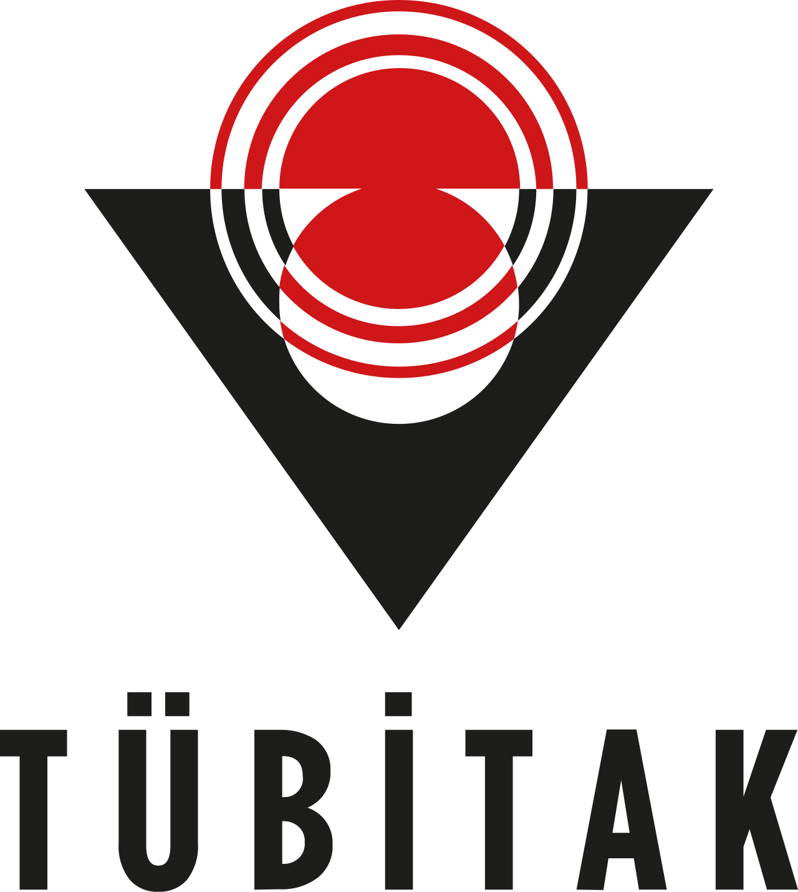

2023 — devam
Doktora — Ekonometri
Marmara Üniversitesi — Sosyal Bilimler Enstitüsü

PAÜ Ekonometri Bölümü — Araştırma Görevlisi
Pamukkale Üniversitesi Ekonometri Bölümü’nde araştırma görevlisi olarak çalışıyorum. Ekonometri, yapay zekâ ve veri bilimi kesişiminde; uygulamalı ekonometri, makine öğrenmesi ve nedensel çıkarım üzerine çalışmalar yürütüyorum.
Marmara Üniversitesi — Sosyal Bilimler Enstitüsü
İstanbul Üniversitesi — Sosyal Bilimler Enstitüsü
Tez: Açıklayıcı yapısal eşitlik modellemesi ve bir uygulama
İstanbul Üniversitesi — İktisat Fakültesi

2023 — devam ediyorPamukkale Üniversitesi — İktisadi ve İdari Bilimler Fakültesi, Ekonometri Bölümü
pau.edu.tr/ekonometri ↗İstanbul Planlama Ajansı
ipa.istanbul ↗Pamukkale Üniversitesi — Ekonomik ve Ekonometrik Uygulama ve Araştırma Merkezi (EKOMER)
pau.edu.tr/ekomer ↗
2026Ekonomi Yaz Seminerleri 2026
pau.edu.tr/eys ↗Ekonomi Yaz Seminerleri 2025
pau.edu.tr/eys ↗Sinem Güler Kangallı Uyar, Bilge Kağan Özbay, Berker Dal — Energy and Buildings
Sinem Güler Kangallı Uyar, Berker Dal, Bilge Kağan Özbay — Building and Environment
Murat Şeker, Mete Başar Baypınar, Gülçin Çelikbıçak, Bilge Kağan Özbay — Istanbul Journal of Economics
Bilge Kağan Özbay, Berker Dal, Sinem Güler Kangallı Uyar — 22nd International Symposium on Econometrics, Operations Research and Statistics
Sinem Güler Kangallı Uyar, Berker Dal, Bilge Kağan Özbay — 14th International Atlas Congress on Advanced Scientific Studies and Interdisciplinary Research
Sinem Güler Kangallı Uyar, Bilge Kağan Özbay, Berker Dal — 10th International Conference on Applied Economics and Finance

TÜBİTAK 2209-A — 2025 1. Dönem · Görev: Akademik Danışman · 2026
TÜBİTAK 2209-A — 2025 1. Dönem · Görev: Akademik Danışman · 2026
TÜBİTAK 2209-A — 2025 1. Dönem · Görev: Akademik Danışman · 2026
TÜBİTAK 2209-A — 2025 1. Dönem · Görev: Akademik Danışman · 2026
TÜBİTAK 2209-A — 2025 1. Dönem · Görev: Akademik Danışman · 2026
TÜBİTAK 2209-A · Görev: Akademik Danışman · 2025
TÜBİTAK 3005 · Görev: Bursiyer · 2024
TÜBİTAK 3501 · Görev: Bursiyer · 2022
Ofis: PAÜ İİBF, C Blok, Ekonometri Bölümü, Kat 2
 Google Scholar
Google Scholar  ORCID
ORCID  LinkedIn
LinkedIn  ResearchGate
ResearchGate